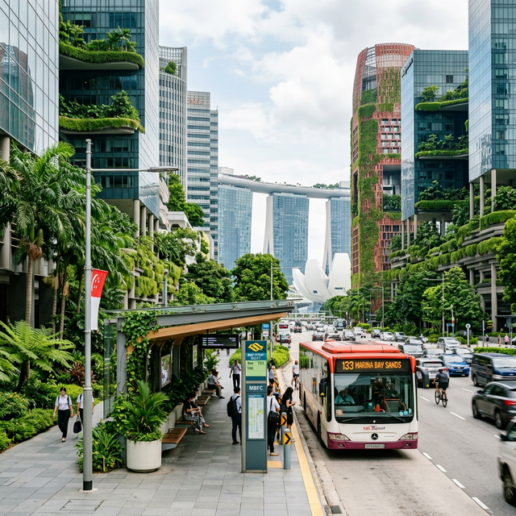
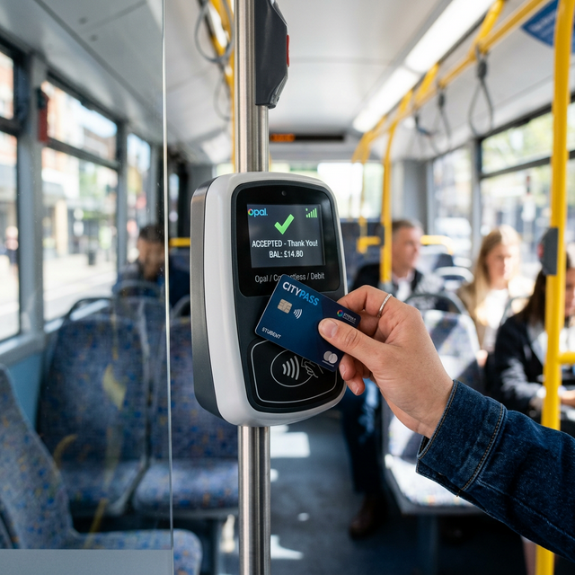

📚 Urban Transit · Policy Analysis · Vocabulary Notes
Phase 1 · Observation
Urban Mobility Dynamics
"While Alice and Bob present valid points, I approach this issue from a different perspective based on my observations of Asian metropolitan areas."
💡 解析： 作者使用了经典的 "While..." 让步句式——先礼后兵，肯定对方观点后引出自己基于 Asian metropolitan areas（亚洲大都市）的独特视角。这在 TOEFL/GRE 学术写作中是高分套路。
"Rather than offering blanket free transit, a more effective strategy is to raise the cost of driving."
🎯 核心论点聚焦
与其搞那种"撒胡椒面"式的全民免费交通，不如精准打击——提高私人驾车成本。 这里 "Blanket" 用得极妙，暗示政策像毯子一样盖住所有人，却模糊了重点。
Ref: Urban Economics 101
"Cities like Tokyo and Singapore have successfully implemented this by increasing consumption taxes or gasoline prices, which deters excessive automobile use while generating revenue to invest in public transit infrastructure."
东京和新加坡的成功秘诀：通过 消费税 或 燃油价格调控 来调节。 通过加税/油价抑制需求并产生收入来投资基础设施。
| 🏙️ City | 📋 Measure | 💡 Effect |
|---|---|---|
| Singapore | COE (购车配额) + ERP (电子收费) | 世界最低汽车保有率 |
| Tokyo | 车位证明制度 + 高燃油税 | 公交出行率超 60% |
| London | 拥堵费 (Congestion Charge) | 中心区车流减少 30% |
📸 Exhibit A: Tokyo

📸 Exhibit B: Singapore
"To address the needs of low-income residents, as Alice mentioned, municipal governments can implement targeted subsidies or discounted fares for specific demographics, such as children, disabled individuals, students, and the elderly. This targeted approach, commonly seen in Europe and Australia, ensures equitable access without straining the overall municipal budget."
如何平衡社会公平？作者提出了 Targeted Subsidies（定向补贴）。 不是让所有人免费，而是精准发放给最需要的群体。

"Targeted Subsidies" 虽然高效，但执行时如何精准核实受助者身份？这需要强大的数字化基础设施支撑。
放弃 Blanket Free（全员免费）
理由：财政压力大，资源错配，且对高收入群体也是无意义补贴。
执行 Raise Driving Cost（提高驾车成本）
手段：燃油税、拥堵费 → 产生的收入反哺公共交通基础设施建设。
配套 Targeted Subsidies（定向补贴弱势群体）
对象：低收入群体、学生、老人、残疾人。确保基本出行权利。
🌟 Result: Sustainable + Equitable
（财政可持续 + 社会公平）